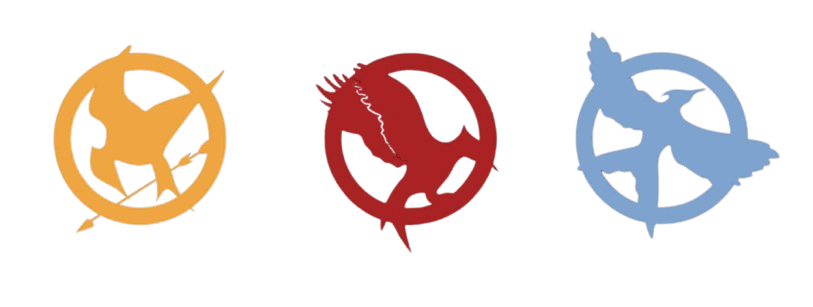

Ramo Tributos
Inspirado na série Jogos Vorazes
Inspirado na série Jogos Vorazes
O Ramo Tributos foi criado para jovens de 14 a 18 anos, inspirando coragem, resiliência, liderança e trabalho em equipe, baseado na série Jogos Vorazes.
Este ramo se foca em habilidades de sobrevivência, resiliência mental e física, trabalho em equipe e liderança, com atividades que desafiam os jovens a se tornarem mais independentes e conscientes.
O símbolo oficial do ramo é o Tordo, representando esperança e resistência.
O marco simbólico do ramo é a Promessa da Arena, um compromisso de enfrentar desafios com coragem e ajudar os companheiros, sempre buscando justiça.